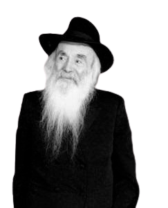

Nuestra visión
Donde se encuentran el corazón y la misión
En el corazón de Cozumel crece una nueva generación de niños con un brillo en los ojos y una misión en el corazón.
Aquí cada día empieza con una sonrisa, un abrazo y la confianza de que un niño que se siente amado, seguro y visto puede llegar tan lejos como sea posible.
Nuestra visión es hacer crecer almas luminosas: niños que conocen sus raíces, orgullosos de su identidad judía, conectados con la Torá, su pueblo y sus valores, y sobre todo que creen en sí mismos y en su capacidad de hacer el bien en el mundo.
Unimos la excelencia académica con una profunda educación jasídica, una forma de vida de amor al prójimo, verdad, alegría y santidad. Nuestro objetivo no es solo dar conocimiento, sino formar alma, corazón y carácter. Enseñar no solo a estudiar, sino a vivir: con honestidad, constancia, responsabilidad y amor.
Un equipo educativo profesional, judío e israelí, acompaña a cada niño y niña en su camino personal, con mucha escucha, sensibilidad y confianza.
Nuestra historia
La escuela fue fundada por Menachem Mendel y Sara Chanzin, en nombre de su abuelo, el Rabino Dovid Chanzin, y abrió sus puertas en Cozumel en febrero de 2019.

Rabino Dovid Chanzin
5671 - 19 de Tamuz de 5763
El Rabino Dovid Chanzin fundó la red educativa de Jabad en Israel, Ohalei Yosef Itzjak Lubavitch, y la dirigió durante veinticinco años.
Su entrega a la educación judía no conoció límites. Cumplió con gran dedicación las indicaciones del Rebe sobre la educación de los niños judíos, y fue el decano de los rabinos de Jabad en Tierra Santa.
Desde el llamado del Rebe de Lubavitch, "hagan todo lo que esté en sus manos" para traer al Mashíaj, trabajó sin descanso para difundir el mensaje de la Redención y preparar al mundo para recibirlo.
En tiempos de angustia para Jacob, uno de los pilares de la salvación de todo el pueblo de Israel es la educación de los niños y niñas judíos en el espíritu de la Torá y el judaísmo, y arraigar en sus corazones la esperanza de la Redención pronto, sin desesperar. Y entonces habrá para los judíos luz, alegría, gozo y honor.